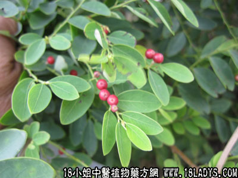

别名：鬼昼符、铁甲将军。
植物名：黑面神。
生长环境：本品为灌木。山岗上，山坡和郊野均常见之。
分布：马拉西亚至我国南部；广州近郊路旁及丘陵地普遍生长。
入药部分：根。
采集期：全年。
自采地点：山岗。
性味：性凉、味微苦。
功能：散毒。
主治、用量和用法：1、花柳白浊：干根1至2两，清水煎服；2、芒果：用法同上。
验方：（治花柳白浊方）黑面神根1两、了哥王根1两、清水五碗，煎成一碗服。
（方解）方中黑面神根、了哥王能清血毒，去膀胱湿热。初起花柳白浊，应用此方，效果明显，如属久虚白浊，则不相宜。
（方歌）白浊初起黑面神，了哥王来慰问因，为除血毒清浮热，久煎服来可欢欣。
附录：（叶）主治、用量和用法：1、治皮肤痕痒：生或干叶适量，煎水外洗；2、治漆疮：用法同上。
验方1：（治皮肤痕痒方）黑面神叶、六耳苓、毛麝香各等分，煎水外洗患处。
（方解）毛麝香祛风消肿，黑面神清热解毒，六耳苓祛湿止痒，对湿毒为患之皮肤痕痒，煎水外洗有效。
（方歌）皮肤痕痒病因多，毛麝香邀黑面神，加入耳苓煎水洗，杀滋解毒止痒疴。
验方2：（治漆疮方）黑面神叶、七大姑叶各等分，煎水外洗患处。
（方解）人体接触漆器，皮肤发生丘疹红肿而痒者为漆疮。七大姑治疗漆疮历验不爽，其药能疏风热、止痒，配黑面神，更有助于清热解毒，其效更好。
（方歌）解除漆器患漆疮，皮肤肿痒势难当，幸有七姑黑神叶，煎汤浴罢一扫光。